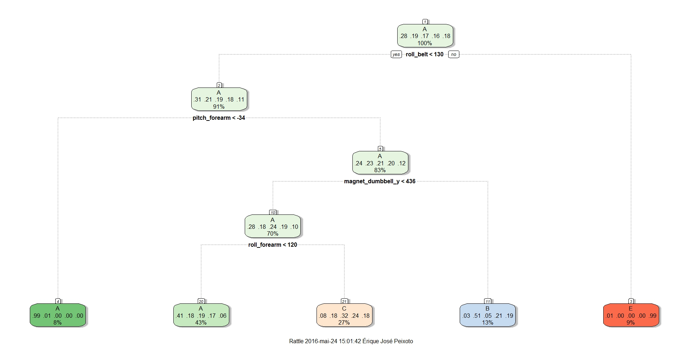
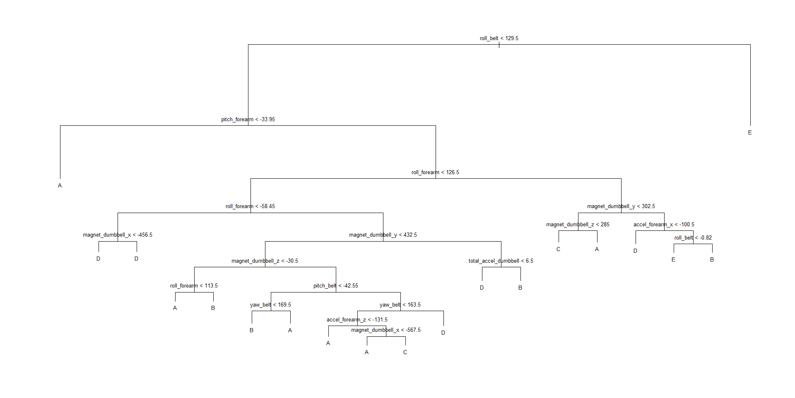
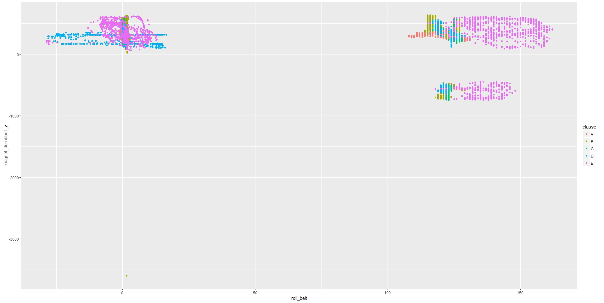

Coursera Practical Machine Learning
Prediction Assignment Writeup
1. Background: Using devices such as Jawbone Up, Nike FuelBand, and Fitbit it is now possible to collect a large amount of data about personal activity relatively inexpensively. These type of devices are part of the quantified self movement – a group
of enthusiasts who take measurements about themselves regularly to improve their health, to find patterns in their behavior, or because they are tech geeks. One thing that people regularly do is quantify how much of a particular activity they do,
but they rarely quantify how well they do it. In this data set, the participants were asked to perform barbell lifts correctly and incorrectly in 5 different ways. More information is available from the website here: http://groupware.les.inf.puc-rio.br/har
(see the section on the Weight Lifting Exercise Dataset). In this project, the goal will be to use data from accelerometers on the belt, forearm, arm, and dumbell of 6 participants toto predict the manner in which praticipants did the exercise. The
dependent variable or response is the “classe” variable in the training set.
2. Data: Downloading the required packages, loading and cleaning the data, testing and training spliting:
#Downloading the required packages
library(caret)
library(rattle)
library(RGtk2)
library(tree)
library(randomForest)
library(lattice)
library(ggplot2)
# Preparing, reading and cleaning the data
Alldata<-read.csv("pml-training.csv", na.strings = c("NA", "#DIV/0!", ""))
testingSet<-read.csv("pml-testing.csv",na.strings=c("NA","#DIV/0!"))
NA_Count = sapply(1:dim(Alldata)[2],function(x)sum(is.na(Alldata[,x])))
NA_list = which(NA_Count>0)
Alldata=Alldata[,-NA_list]
Alldata=Alldata[,-c(1:7)]
Alldata$classe=factor(Alldata$classe)
NA_Count1=sapply(1:dim(testingSet)[2],function(x)sum(is.na(testingSet[,x])))
NA_list1=which(NA_Count1>0)
testingSet=testingSet[,-NA_list]
testingSet=testingSet[,-c(1:7)]
dim(Alldata)
#[1] 19622 53
dim(testingSet)
#[1] 20 53
3. Test and training: Test and training, with p=0.6:
#Test and tranning
inTrain=createDataPartition(y=Alldata$classe, p=0.6, list=FALSE)
training <-Alldata[inTrain,]
testing <-Alldata[-inTrain,]
4. Modelling: We now create our model using the functions provided in caret package in R. ## Tree Method Using the Tree method to do the prediction of ‘classe’.
4.1. Regression tree:
#Regression Trees
Model1<- train(classe ~ .,method='rpart',data=training)
fancyRpartPlot(Model1$finalModel)
print(Model1$finalModel)
## n= 11776
node), split, n, loss, yval, (yprob)
* denotes terminal node
1) root 11776 8428 A (0.28 0.19 0.17 0.16 0.18)
2) roll_belt< 130.5 10792 7454 A (0.31 0.21 0.19 0.18 0.11)
4) pitch_forearm< -33.65 951 5 A (0.99 0.0053 0 0 0) *
5) pitch_forearm>=-33.65 9841 7449 A (0.24 0.23 0.21 0.2 0.12)
10) roll_forearm< 125.5 6358 4176 A (0.34 0.24 0.16 0.19 0.069)
20) magnet_dumbbell_y< 432.5 5209 3090 A (0.41 0.18 0.18 0.17 0.061) *
21) magnet_dumbbell_y>=432.5 1149 567 B (0.055 0.51 0.03 0.3 0.11) *
11) roll_forearm>=125.5 3483 2421 C (0.06 0.21 0.3 0.21 0.22) *
3) roll_belt>=130.5 984 10 E (0.01 0 0 0 0.99) *
pred=predict(Model1,newdata=testing)
z=confusionMatrix(pred,testing$classe)
z$table
## Reference
Prediction A B C D E
A 2003 633 642 575 200
B 39 400 24 216 95
C 186 485 702 495 490
D 0 0 0 0 0
E 4 0 0 0 657
z$overall[1]
##Accuracy
0.47948
Figure 1: Tree method prediction plot.
From the confusion matrix it is clear the accuracy of “0.479” for this model fit clearly shows “no purity” hence this model fit is rejected.
4.2. Tree package:
#Tree
set.seed(12345)
tree.training=tree(classe~.,data=training)
summary(tree.training)
##Classification tree:
tree(formula = classe ~ ., data = training)
Variables actually used in tree construction:
[1] "roll_belt" "pitch_forearm" "roll_forearm" "magnet_dumbbell_x" "magnet_dumbbell_y" "magnet_dumbbell_z" "pitch_belt" "yaw_belt" "accel_forearm_z" "total_accel_dumbbell"
[11] "accel_forearm_x"
Number of terminal nodes: 19
Residual mean deviance: 1.651 = 19420 / 11760
Misclassification error rate: 0.3134 = 3691 / 11776
Figure 2: Tree method prediction plot.
4.3. Cross validation: We are going to check the performance of the tree on the testing data by cross validation. The 0.676 is not very accurate. The 0.495 from 'caret' package is much lower than the result from 'tree' package.
#Cross validation
tree.pred=predict(tree.training,testing,type="class")
predMatrix = with(testing,table(tree.pred,classe))
sum(diag(predMatrix))/sum(as.vector(predMatrix))
##[1] 0.6758858
#Caret Package
tree.pred=predict(modFit,testing)
predMatrix = with(testing,table(tree.pred,classe))
sum(diag(predMatrix))/sum(as.vector(predMatrix))
##[1] 0.4949019
4.4. Random forest: Using Random forest method to do the prediction. Provides 99% accurancy hence this model has been choosen to do predict the testing data set.
#Random Forest Model
Model2=randomForest(classe~., data=training, method='class')
pred2 = predict(Model2,testing,type='class')
qplot(roll_belt, magnet_dumbbell_y, colour=classe, data=training)
pred=predict(Model1,newdata=testing)
z=confusionMatrix(pred,testing$classe)
z$table
## Reference
Prediction A B C D E
A 2003 633 642 575 200
B 39 400 24 216 95
C 186 485 702 495 490
D 0 0 0 0 0
E 4 0 0 0 657
z2$overall[1]
Accuracy
0.9947744


Figure 3: Random forest plot
5. Conclusion: Random forest method provides the best fit model and it is been considered for testing the test data set to submit results.
#Conclusion
Pred3= predict(Model2,testingSet,type='class')
nofiles = length(Pred3)
for (i in 1:nofiles){
filename = paste0("problem_id",i,".txt")
write.table(Pred3[i],file=filename,quote=FALSE,row.names=FALSE,col.names=FALSE)
}
Pred3
##1 2 3 4 5 6 7 8 9 10 11 12 13 14 15 16 17 18 19 20
B A B A A E D B A A B C B A E E A B B B
Levels: A B C D E